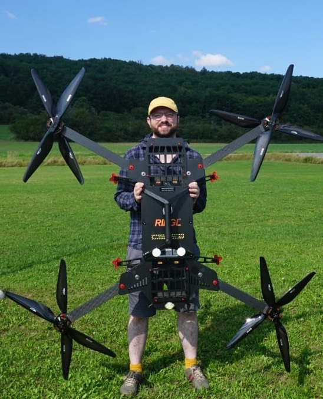

### Geography and Environmental Science Placement Module <br><br><br> #### Stuart Grieve #### Geography and Environmental Science, QMUL
About me

Environmental scientist using technology to understand changes in:
Forests, large rivers, coastal landfill
Working with:
Landowners, community groups, startups, media
### New placement module - Runs in sem B of second year (starting Jan 2027) - Open to students across all Geography, Global Development and Environmental Science degrees - Optional module, with students matched to relevant placements - Students spend 1 day per week for 10 weeks on their placement - Students assessed through a learning journal and oral exam
### Employer commitment - ~80 hours of placement spread over ~10 weeks (flexible) - Travel and lunch expenses covered, but no salary expectation - Adherence to H&S guidelines - Signoff on student's learning journal - Communicate with our partnerships officer if issues arise
### Employer benefits - Access to high quality students/graduates - Identifying future employees in low risk setting - Support completing projects, running events, conducting research, etc - Strengthen partnerships with QMUL GES - Aligning with EDI strategies > We are consistenly impressed with the skills, knowledge and professionalism of QM Geography students
### Interested? * Chat to me! * Stuart Grieve: s.grieve@qmul.ac.uk